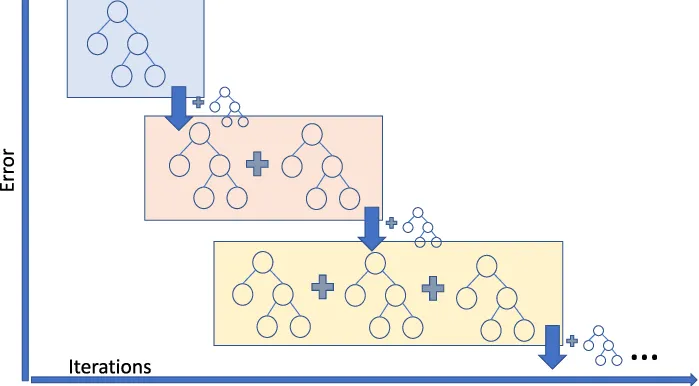

9 Gradient Boosting
Gradient Boosting is a boosting technique that builds an additive model in a forward stage-wise manner. Unlike AdaBoost, which adjusts weights on training instances, Gradient Boosting fits new models to the residual errors made by prior models using the gradient of a specified loss function.
At each stage, a new weak learner is trained to minimize the loss function by correcting the errors of the current ensemble.
9.1 Gradient Boosting Intuition
Gradient Boosting can be understood as functional gradient descent:
- We start with an initial prediction (e.g., the mean of the targets).
- At each iteration, we fit a new model to the negative gradient of the loss function with respect to the current predictions.
- This negative gradient plays a similar role to residuals in squared loss regression—it points in the direction that most reduces the loss.
- The new model’s predictions are then added to the current model, scaled by a learning rate.
By sequentially adding models that reduce the remaining error, the ensemble gradually improves.
9.2 How Gradient Boosting Works (Regression Example)
Initialize the model with a constant prediction:
\[ \hat{f}^{(0)}(x) = \arg\min_c \sum_{i=1}^n L(y_i, c) \]For \(m = 1\) to \(M\) (number of boosting rounds):
Compute the negative gradient (pseudo-residuals):
\[ r_i^{(m)} = - \left[ \frac{\partial L(y_i, \hat{f}(x_i))}{\partial \hat{f}(x_i)} \right]_{\hat{f}(x) = \hat{f}^{(m-1)}(x)} \]Fit a base learner \(h^{(m)}(x)\) to the residuals \(r_i^{(m)}\).
Determine the optimal step size (line search):
\[ \gamma^{(m)} = \arg\min_\gamma \sum_{i=1}^n L\left(y_i, \hat{f}^{(m-1)}(x_i) + \gamma \cdot h^{(m)}(x_i)\right) \]Update the model:
\[ \hat{f}^{(m)}(x) = \hat{f}^{(m-1)}(x) + \eta \cdot \gamma^{(m)} h^{(m)}(x) \] where \(\eta\) is the learning rate.
Final prediction:
\[ \hat{f}^{(M)}(x) \]
import pandas as pd
import numpy as np
import seaborn as sns
import matplotlib.pyplot as plt
from sklearn.metrics import mean_squared_error
from sklearn.model_selection import cross_val_score,train_test_split, KFold, cross_val_predict
from sklearn.metrics import root_mean_squared_error, mean_squared_error,r2_score,roc_curve,auc,precision_recall_curve, accuracy_score, \
recall_score, precision_score, confusion_matrix
from sklearn.tree import DecisionTreeRegressor,DecisionTreeClassifier
from sklearn.model_selection import GridSearchCV, ParameterGrid, StratifiedKFold
from sklearn.ensemble import GradientBoostingRegressor,GradientBoostingClassifier, BaggingRegressor,BaggingClassifier,RandomForestRegressor,RandomForestClassifier,AdaBoostRegressor,AdaBoostClassifier
from sklearn.preprocessing import OneHotEncoder, FunctionTransformer
import itertools as it
import time as time
import optuna
from skopt import BayesSearchCV
from skopt.space import Real, Categorical, Integer
from skopt.plots import plot_objective, plot_histogram, plot_convergence
import warnings
from IPython import display9.3 Gradient Boosting in Scikit-Learn
Scikit-learn offers a standard implementation of Gradient Boosting through two primary estimators:
GradientBoostingClassifierfor classification tasksGradientBoostingRegressorfor regression tasks
These estimators build an additive model in a forward stage-wise fashion, allowing for the optimization of arbitrary differentiable loss functions. They are suitable for small to medium-sized datasets and provide flexibility in model tuning.
For larger datasets (typically with n_samples >= 10,000), consider using the histogram-based variants:
9.4 Core Hyperparameters Categories
The primary hyperparameters for GradientBoostingClassifier and GradientBoostingRegressor can be grouped into the following categories:
Number of Trees (
n_estimators)- Use early stopping (via
n_iter_no_changeandvalidation_fractionin scikit-learn) to avoid overfitting.
- Start with a large value (e.g., 500–1000) and let early stopping prune unnecessary trees.
- Use early stopping (via
Early Stopping
- Prevents overfitting by halting training once the validation performance stops improving.
- Controlled using:
n_iter_no_change: Number of rounds with no improvement before stopping (e.g., 10).validation_fraction: Fraction of training data reserved as internal validation set (e.g., 0.1).tol: Minimum improvement to be considered significant (e.g.,1e-4).
- Set a large
n_estimators, and let early stopping determine the optimal number of boosting iterations.
- Prevents overfitting by halting training once the validation performance stops improving.
Learning Rate (
learning_rate)- Shrinks the contribution of each tree to improve generalization.
- Typical range: 0.01–0.2 (lower values require more trees).
- Shrinks the contribution of each tree to improve generalization.
Tree Complexity
max_depth: Depth of individual trees. Start shallow (3–6) to limit overfitting.
min_samples_split: Minimum samples required to split a node (e.g., 10–50).
min_samples_leaf: Minimum samples required in a leaf node (e.g., 5–20).
Stochastic Gradient Boosting
subsample: Fraction of training data sampled per tree (e.g., 0.5–1.0).
max_features: Fraction/absolute number of features used per split (e.g.,sqrt(n_features)or0.8).
Loss Function (
loss)- Matches the problem type:
- Regression:
squared_error,absolute_error - Classification:
log_loss(binary/multinomial deviance)
- Regression:
- Matches the problem type:
For a comprehensive list and detailed explanations of all hyperparameters, refer to the official Scikit-learn documentation:
9.5 Hyperparameter Tuning
Let’s reuse the car dataset to evaluate how different hyperparameter settings affect the performance of gradient boosting
# Load the dataset
car = pd.read_csv('Datasets/car.csv')
car.head()| brand | model | year | transmission | mileage | fuelType | tax | mpg | engineSize | price | |
|---|---|---|---|---|---|---|---|---|---|---|
| 0 | vw | Beetle | 2014 | Manual | 55457 | Diesel | 30 | 65.3266 | 1.6 | 7490 |
| 1 | vauxhall | GTC | 2017 | Manual | 15630 | Petrol | 145 | 47.2049 | 1.4 | 10998 |
| 2 | merc | G Class | 2012 | Automatic | 43000 | Diesel | 570 | 25.1172 | 3.0 | 44990 |
| 3 | audi | RS5 | 2019 | Automatic | 10 | Petrol | 145 | 30.5593 | 2.9 | 51990 |
| 4 | merc | X-CLASS | 2018 | Automatic | 14000 | Diesel | 240 | 35.7168 | 2.3 | 28990 |
X = car.drop(columns=['price'])
y = car['price']
X_train, X_test, y_train, y_test = train_test_split(X, y, test_size=0.2, random_state=42)
# extract the categorical columns and put them in a list
categorical_feature = X.select_dtypes(include=['object']).columns.tolist()
# extract the numerical columns and put them in a list
numerical_feature = X.select_dtypes(include=['int64', 'float64']).columns.tolist()encoder = OneHotEncoder(handle_unknown='ignore', sparse_output=False)
X_train_encoded = encoder.fit_transform(X_train[categorical_feature])
X_test_encoded = encoder.transform(X_test[categorical_feature])
# Convert the encoded features back to DataFrame
X_train_encoded_df = pd.DataFrame(X_train_encoded, columns=encoder.get_feature_names_out(categorical_feature))
X_test_encoded_df = pd.DataFrame(X_test_encoded, columns=encoder.get_feature_names_out(categorical_feature))
# Concatenate the encoded features with the original numerical features
X_train_final = pd.concat([X_train_encoded_df, X_train[numerical_feature].reset_index(drop=True)], axis=1)
X_test_final = pd.concat([X_test_encoded_df, X_test[numerical_feature].reset_index(drop=True)], axis=1)9.5.1 Individual Hyperparameter Impact Analysis
9.5.1.1 Effect of Number of Trees on Cross-Validation Error
Effect of Number of Trees on Cross-Validation Error In Gradient Boosting, the number of trees (n_estimators) controls how many boosting rounds the model performs. Adding more trees can reduce bias and improve training accuracy, but it also increases the risk of overfitting, especially with a high learning rate.
The optimal number of trees is often found by balancing model complexity and generalization performance using cross-validation.
def get_models():
models = dict()
# define number of trees to consider
n_trees = [50, 100, 500, 800, 1000, 1500, 2000]
for n in n_trees:
models[str(n)] = GradientBoostingRegressor(n_estimators=n,random_state=1,loss='huber')
return models
# evaluate a given model using cross-validation
def evaluate_model(model, X, y):
# define the evaluation procedure
cv = KFold(n_splits=5, shuffle=True, random_state=1)
# evaluate the model and collect the results
scores = np.sqrt(-cross_val_score(model, X, y, scoring='neg_mean_squared_error', cv=cv, n_jobs=-1))
return scores
# get the models to evaluate
models = get_models()
# evaluate the models and store results
results, names = list(), list()
for name, model in models.items():
# evaluate the model
scores = evaluate_model(model, X_train_final, y_train)
# store the results
results.append(scores)
names.append(name)
# summarize the performance along the way
print('>%s %.3f (%.3f)' % (name, np.mean(scores), np.std(scores)))
plt.boxplot(results, labels=names, showmeans=True)
plt.ylabel('Cross validation error',fontsize=15)
plt.xlabel('Number of trees',fontsize=15);
# get the optimal number of trees
best_index = np.argmin([np.mean(r) for r in results])
best_n_trees = names[best_index]
best_score = np.mean(results[best_index])
# Highlight the best model on the plot
plt.axvline(x=best_index+1, color='red', linestyle='--', alpha=0.7)
plt.text(best_index + 1 - 0.4, best_score+700,
f'Best: {best_n_trees} (RMSE: {best_score:.1f})',
color='red', fontweight='bold')
print(f"Best number of trees: {best_n_trees} with RMSE: {best_score:.3f}")>50 6549.576 (722.462)
>100 5232.949 (656.216)
>500 3419.467 (262.753)
>800 3202.489 (194.072)
>1000 3106.002 (184.799)
>1500 3039.520 (210.989)
>2000 3194.874 (293.134)
Best number of trees: 1500 with RMSE: 3039.5209.5.1.2 Early stopping in Gradient Boosting
Why Early Stopping Matters
Specifying a fixed number of trees means deciding in advance how many boosting rounds (i.e., trees) the model will train.
This approach can be inefficient or risky:
- If too few trees are used, the model may underfit.
- If too many, the model may overfit or waste computation.
That’s why early stopping is useful — it allows the model to stop training once performance on a validation set no longer improves, effectively selecting the optimal number of trees automatically.
How Early Stopping Works
Instead of specifying a fixed number of trees (n_estimators), the algorithm monitors performance on a validation set and stops adding new trees once the model’s improvement has plateaued.
In scikit-learn, early stopping can be enabled using:
early_stopping=Truevalidation_fraction: The fraction of training data used as a validation setn_iter_no_change: Number of iterations to wait without improvement before stopping
This approach not only improves generalization but also reduces training time by avoiding unnecessary trees.
params = dict(n_estimators=2000, max_depth=5, learning_rate=0.1, random_state=42)
gbm_full = GradientBoostingRegressor(**params)
gbm_early_stopping = GradientBoostingRegressor(
**params,
validation_fraction=0.1,
n_iter_no_change=10,
)
start_time = time.time()
gbm_full.fit(X_train_final, y_train)
training_time_full = time.time() - start_time
n_estimators_full = gbm_full.n_estimators_
start_time = time.time()
gbm_early_stopping.fit(X_train_final, y_train)
training_time_early_stopping = time.time() - start_time
estimators_early_stopping = gbm_early_stopping.n_estimators_Let’s calculate the RMSE on both the training and test datasets for each model, which will be used for later visualization.
# import root mean squared error function
from sklearn.metrics import root_mean_squared_error
train_errors_without = []
test_errors_without = []
train_errors_with = []
test_errors_with = []
for i, (train_pred, test_pred) in enumerate(
zip(
gbm_full.staged_predict(X_train_final),
gbm_full.staged_predict(X_test_final),
)
):
train_errors_without.append(root_mean_squared_error(y_train, train_pred))
test_errors_without.append(root_mean_squared_error(y_test, test_pred))
for i, (train_pred, test_pred) in enumerate(
zip(
gbm_early_stopping.staged_predict(X_train_final),
gbm_early_stopping.staged_predict(X_test_final),
)
):
train_errors_with.append(root_mean_squared_error(y_train, train_pred))
test_errors_with.append(root_mean_squared_error(y_test, test_pred))Let’s visulize Comparison. It includes three subplots:
- Plotting training errors of both models over boosting iterations.
- Plotting test errors of both models over boosting iterations.
- Creating a bar chart to compare the training times and the number of estimators used by the models with and without early stopping.
fig, axes = plt.subplots(ncols=3, figsize=(12, 4))
axes[0].plot(train_errors_without, label="gbm_full")
axes[0].plot(train_errors_with, label="gbm_early_stopping")
axes[0].set_xlabel("Boosting Iterations")
axes[0].set_ylabel("RMSE (Training)")
axes[0].set_yscale("log")
axes[0].legend()
axes[0].set_title("Training Error")
axes[1].plot(test_errors_without, label="gbm_full")
axes[1].plot(test_errors_with, label="gbm_early_stopping")
axes[1].set_xlabel("Boosting Iterations")
axes[1].set_ylabel("RMSE (Test)")
axes[1].set_yscale("log")
axes[1].legend()
axes[1].set_title("Test Error")
training_times = [training_time_full, training_time_early_stopping]
labels = ["gbm_full", "gbm_early_stopping"]
bars = axes[2].bar(labels, training_times)
axes[2].set_ylabel("Training Time (s)")
for bar, n_estimators in zip(bars, [n_estimators_full, estimators_early_stopping]):
height = bar.get_height()
axes[2].text(
bar.get_x() + bar.get_width() / 2,
height + 0.001,
f"Estimators: {n_estimators}",
ha="center",
va="bottom",
)
plt.tight_layout()
plt.show()The difference in training error between the gbm_full and the gbm_early_stopping stems from the fact that
gbm_early_stopping sets aside validation_fraction of the training data as an internal validation set.
Early stopping is decided based on this internal validation score.
Benefits of Using Early Stopping in Boosting:
Preventing Overfitting
Early stopping helps avoid overfitting by monitoring the test error.
When the error stabilizes or starts increasing, training stops — resulting in better generalization to unseen data.Improving Training Efficiency
Models with early stopping often require fewer estimators while achieving similar accuracy.
This reduces training time significantly compared to training without early stopping.
9.5.1.3 Effect of Learning Rate on Cross-Validation Error
The learning rate (learning_rate) determines how much each new tree contributes to the overall model. A smaller learning rate results in slower learning and often requires more trees to achieve good performance. A larger learning rate speeds up learning but increases the risk of overfitting.
Finding the optimal learning rate involves balancing: - High learning rate → faster convergence, but higher risk of overfitting
- Low learning rate → better generalization, but requires more trees and longer training time
Cross-validation helps identify the learning rate that minimizes prediction error while ensuring model stability.
def get_models():
models = dict()
# create 9 evenly spaced values between 0.2 and 1.0
learning_rates = np.linspace(0.2, 1.0, 9)
for learning_rate in learning_rates:
# Round to 2 decimal places for clean keys
lr_rounded = round(learning_rate, 2)
key = f"{lr_rounded:.2f}"
models[key] = GradientBoostingRegressor(learning_rate=lr_rounded, random_state=1, loss='huber')
return models
# evaluate a given model using cross-validation
def evaluate_model(model, X, y):
# define the evaluation procedure
cv = KFold(n_splits=5, shuffle=True, random_state=1)
# evaluate the model and collect the results
scores = np.sqrt(-cross_val_score(model, X, y, scoring='neg_mean_squared_error', cv=cv, n_jobs=-1))
return scores
# get the models to evaluate
models = get_models()
# evaluate the models and store results
results, names = list(), list()
mean_scores = [] # Track mean scores separately
for name, model in models.items():
# evaluate the model
scores = evaluate_model(model, X_train_final, y_train)
# store the results
results.append(scores)
names.append(name)
# Calculate and store mean score
mean_score = np.mean(scores)
mean_scores.append(mean_score)
# summarize the performance along the way
print('>%s %.1f (%.1f)' % (name, mean_score, np.std(scores)))
# plot model performance for comparison
plt.figure(figsize=(10, 7))
plt.boxplot(results, labels=names, showmeans=True)
plt.ylabel('Cross validation error', fontsize=15)
plt.xlabel('Learning rate', fontsize=15)
plt.title('Model Performance by Learning Rate', fontsize=16)
plt.grid(True, linestyle='--', alpha=0.7)
# Find the best model using the saved mean scores
best_index = np.argmin(mean_scores)
best_lr = names[best_index]
best_score = mean_scores[best_index]
# Highlight the best model on the plot
plt.axvline(x=best_index+1, color='red', linestyle='--', alpha=0.7)
plt.text(best_index+1.2, min(mean_scores)*0.95,
f'Best: {best_lr} (RMSE: {best_score:.1f})',
color='red', fontweight='bold')
plt.show()
# Print the best model information
print(f"\nBest model: {best_lr} with RMSE: {best_score:.3f}")>0.20 4193.7 (301.2)
>0.30 3740.3 (306.3)
>0.40 3630.0 (212.2)
>0.50 3529.6 (181.5)
>0.60 3650.2 (169.0)
>0.70 3644.7 (142.5)
>0.80 3908.9 (260.6)
>0.90 3968.7 (201.1)
>1.00 4208.3 (368.5)
Best model: 0.50 with RMSE: 3529.5639.5.1.4 Learning Rate and Number of Trees Are Closely Linked
The learning rate and number of trees (n_estimators) are tightly coupled hyperparameters in gradient boosting. Their balance plays a key role in model performance and overfitting control.
- A lower learning rate slows the learning process, requiring more trees to achieve strong performance.
- A higher learning rate speeds up training but may cause the model to overfit if not regularized properly.
⚠️ A high learning rate with too few trees can lead to poor generalization, while a very low learning rate with too many trees may improve accuracy but increase training time significantly.
Best practice: Use a low to moderate learning rate (e.g., 0.01–0.1) combined with early stopping to find the optimal number of trees.
9.5.1.5 Effect of Stochastic Gradient Boosting on Cross-Validation Error
Stochastic Gradient Boosting enhances generalization by introducing randomness into the model-building process. Two key hyperparameters that control this are subsample and max_features, and they operate on different dimensions of the data:
| Parameter | Applies To | Purpose |
|---|---|---|
subsample |
Rows (data points) | Randomly samples a fraction of the training data for each tree |
max_features |
Columns (features) | Randomly samples a fraction of the features for each tree or split |
By tuning these parameters, we can reduce overfitting and increase model robustness. However, setting them too low may lead to underfitting due to insufficient information per tree.
from sklearn.metrics import make_scorer, mean_squared_error
# Define model
model = GradientBoostingRegressor(n_estimators=100, max_depth=4, learning_rate=0.1, random_state=1)
# Define param grid
param_grid = {
'subsample': np.linspace(0.2, 1.0, 9),
'max_features': np.linspace(0.2, 1.0, 9)
}
# RMSE scoring
scorer = make_scorer(mean_squared_error, greater_is_better=False)
# Grid search
grid = GridSearchCV(estimator=model, param_grid=param_grid,
scoring=scorer, cv=5, n_jobs=-1, verbose=1)
grid.fit(X_train_final, y_train)
# Create DataFrame from results
results_df = pd.DataFrame(grid.cv_results_)
results_df['mean_rmse'] = np.sqrt(-results_df['mean_test_score'])Fitting 5 folds for each of 81 candidates, totalling 405 fits# Round subsample and max_features to 2 decimal places for display
results_df['subsample'] = results_df['param_subsample'].astype(float).round(2)
results_df['max_features'] = results_df['param_max_features'].astype(float).round(2)
# Then pivot using the rounded values
heatmap_data = results_df.pivot(index='subsample', columns='max_features', values='mean_rmse')
# Plot heatmap
plt.figure(figsize=(12, 9))
sns.heatmap(heatmap_data, annot=True, fmt=".3f", cmap="YlGnBu", cbar_kws={'label': 'CV RMSE'})
plt.title('Grid Search: CV RMSE by Subsample and Max Features')
plt.ylabel('Subsample')
plt.xlabel('Max Features')
plt.tight_layout()
plt.show()
# Find the location (subsample, max_features) of the minimum RMSE
min_rmse = heatmap_data.min().min()
best_location = heatmap_data.stack().idxmin() # returns a tuple: (subsample, max_features)
print(f"Best RMSE: {min_rmse:.3f} at subsample = {best_location[0]}, max_features = {best_location[1]}")
Best RMSE: 3748.534 at subsample = 0.5, max_features = 0.79.5.1.6 Effect of Tree Complexity on Cross-Validation Error (Not Tuned Here)
Tree complexity controls how expressive and flexible each individual tree in the gradient boosting ensemble can be. While deeper and more complex trees can capture intricate patterns in the data, they are also more prone to overfitting, especially when combined with many trees.
Key parameters include:
max_depth: Limits the depth of each tree. Shallower trees (e.g., depth 3–6) are preferred for reducing overfitting.min_samples_split: Specifies the minimum number of samples required to split an internal node. Higher values make the tree more conservative.min_samples_leaf: Sets the minimum number of samples required to be at a leaf node. This also helps smooth the model and avoid capturing noise.
These parameters influence the bias-variance trade-off by adjusting how expressive each tree can be.
Since we have already discussed and tuned these parameters in earlier lessons (decision trees and random forests), we will not tune them again here.
9.5.1.7 Loss Function (loss)
In gradient boosting, the loss function determines how the model measures prediction errors and guides the optimization process during training. Here’s a breakdown of common loss functions for regression and classification tasks:
- Regression:
squared_error: Penalizes larger errors more heavily; sensitive to outliers. (Default for regression)absolute_error: Penalizes all errors equally; more robust to outliers.huber: Combines squared and absolute error; less sensitive to outliers thansquared_errorand smoother thanabsolute_error.
- Classification:
log_loss: Also known as logistic loss or deviance; commonly used for binary and multiclass classification.exponential: Used by AdaBoost; heavily penalizes misclassified points, making it more sensitive to outliers.
Choosing an appropriate loss function ensures the model is optimized for the specific structure and goals of the problem.
9.5.2 Joint Hyperparameter Optimization
Since the optimal values of hyperparameters are often interdependent, they should be tuned together rather than in isolation to achieve the best performance.Next we will simultaneously tune multiple core hyperparameters to find the best combination for overall model performance.
9.5.2.1 Using BayesSearchCV for Hyperparameter Tuning
We can use BayesSearchCV with early stopping to simultaneously tune multiple hyperparameters in a more efficient and automated way.
# time the search
start = time.time()
# Define the search space
search_space = {
'learning_rate': Real(0.01, 0.8, prior='log-uniform'), # Prefer lower rates
'max_depth': Integer(4, 32), # Shallow trees to prevent overfitting
'min_samples_split': Integer(2, 100), # Regularize splits
'min_samples_leaf': Integer(1, 30), # Regularize leaves
'subsample': Real(0.1, 1.0), # Stochastic sampling
'max_features': Categorical([
'sqrt', 'log2', None, # String options
0.1, 0.2, 0.3, 0.4, 0.5, 0.6, 0.7, 0.8, 0.9 # Fractional options (discrete)
]) # Feature sampling
}
# Define the model
model_with_early_stopping = GradientBoostingRegressor(
n_estimators=10000, # Start with a large number of trees
validation_fraction=0.1, # Reserve 10% of training data for validation
n_iter_no_change=10, # Stop after 20 rounds of no improvement
tol=0.001, # Tolerance for early stopping
random_state=42
)
# Define the search
bayes_cv = BayesSearchCV(
model_with_early_stopping,
search_space,
n_iter=50, # Number of iterations
scoring='neg_mean_squared_error',
cv=5, # Cross-validation folds
n_jobs=-1, # Use all available cores
verbose=1, # Verbosity level
random_state=42 # For reproducibility
)
# Fit the model
bayes_cv.fit(X_train_final, y_train)
# Stop the timer
end = time.time()
# Calculate elapsed time
elapsed_time = (end - start)/60 # Convert to minutes
# Print elapsed time
print(f"Elapsed time for Bayesian optimization with early stopping: {elapsed_time:.2f} minutes")
# Extract the best parameters and score
best_params = bayes_cv.best_params_
best_score = np.sqrt(-bayes_cv.best_score_)
print(f"Best Parameters: {best_params}")
print(f"Best CV RMSE: {best_score:.3f}")Fitting 5 folds for each of 1 candidates, totalling 5 fits
Fitting 5 folds for each of 1 candidates, totalling 5 fits
Fitting 5 folds for each of 1 candidates, totalling 5 fits
Fitting 5 folds for each of 1 candidates, totalling 5 fits
Fitting 5 folds for each of 1 candidates, totalling 5 fits
Fitting 5 folds for each of 1 candidates, totalling 5 fits
Fitting 5 folds for each of 1 candidates, totalling 5 fits
Fitting 5 folds for each of 1 candidates, totalling 5 fits
Fitting 5 folds for each of 1 candidates, totalling 5 fits
Fitting 5 folds for each of 1 candidates, totalling 5 fits
Fitting 5 folds for each of 1 candidates, totalling 5 fits
Fitting 5 folds for each of 1 candidates, totalling 5 fits
Fitting 5 folds for each of 1 candidates, totalling 5 fits
Fitting 5 folds for each of 1 candidates, totalling 5 fits
Fitting 5 folds for each of 1 candidates, totalling 5 fits
Fitting 5 folds for each of 1 candidates, totalling 5 fits
Fitting 5 folds for each of 1 candidates, totalling 5 fits
Fitting 5 folds for each of 1 candidates, totalling 5 fits
Fitting 5 folds for each of 1 candidates, totalling 5 fits
Fitting 5 folds for each of 1 candidates, totalling 5 fits
Fitting 5 folds for each of 1 candidates, totalling 5 fits
Fitting 5 folds for each of 1 candidates, totalling 5 fits
Fitting 5 folds for each of 1 candidates, totalling 5 fits
Fitting 5 folds for each of 1 candidates, totalling 5 fits
Fitting 5 folds for each of 1 candidates, totalling 5 fits
Fitting 5 folds for each of 1 candidates, totalling 5 fits
Fitting 5 folds for each of 1 candidates, totalling 5 fits
Fitting 5 folds for each of 1 candidates, totalling 5 fits
Fitting 5 folds for each of 1 candidates, totalling 5 fits
Fitting 5 folds for each of 1 candidates, totalling 5 fits
Fitting 5 folds for each of 1 candidates, totalling 5 fits
Fitting 5 folds for each of 1 candidates, totalling 5 fits
Fitting 5 folds for each of 1 candidates, totalling 5 fits
Fitting 5 folds for each of 1 candidates, totalling 5 fits
Fitting 5 folds for each of 1 candidates, totalling 5 fits
Fitting 5 folds for each of 1 candidates, totalling 5 fits
Fitting 5 folds for each of 1 candidates, totalling 5 fits
Fitting 5 folds for each of 1 candidates, totalling 5 fits
Fitting 5 folds for each of 1 candidates, totalling 5 fits
Fitting 5 folds for each of 1 candidates, totalling 5 fits
Fitting 5 folds for each of 1 candidates, totalling 5 fits
Fitting 5 folds for each of 1 candidates, totalling 5 fits
Fitting 5 folds for each of 1 candidates, totalling 5 fits
Fitting 5 folds for each of 1 candidates, totalling 5 fits
Fitting 5 folds for each of 1 candidates, totalling 5 fits
Fitting 5 folds for each of 1 candidates, totalling 5 fits
Fitting 5 folds for each of 1 candidates, totalling 5 fits
Fitting 5 folds for each of 1 candidates, totalling 5 fits
Fitting 5 folds for each of 1 candidates, totalling 5 fits
Fitting 5 folds for each of 1 candidates, totalling 5 fits
Elapsed time for Bayesian optimization with early stopping: 10.00 minutes
Best Parameters: OrderedDict({'learning_rate': 0.01, 'max_depth': 32, 'max_features': 0.6, 'min_samples_leaf': 1, 'min_samples_split': 2, 'subsample': 0.302790110221997})
Best CV RMSE: 3142.483# Plot the optimization results
plot_convergence(bayes_cv.optimizer_results_);# Plot the objective function
plot_objective(bayes_cv.optimizer_results_[0])
plt.title('Bayesian Optimization: Objective Function')
plt.xlabel('Parameter Value')
plt.ylabel('Objective Value (RMSE)')
plt.show()9.5.2.2 Hyperparameter Optimization with Optuna
def objective(trial):
# Define hyperparameters to optimize
params = {
'learning_rate': trial.suggest_float('learning_rate', 0.01, 0.8, log=True),
'max_depth': trial.suggest_int('max_depth', 4, 32),
'min_samples_split': trial.suggest_int('min_samples_split', 2, 100),
'min_samples_leaf': trial.suggest_int('min_samples_leaf', 1, 30),
'subsample': trial.suggest_float('subsample', 0.1, 1.0),
'max_features': trial.suggest_categorical(
'max_features',
['sqrt', 'log2', None, 0.1, 0.2, 0.3, 0.4, 0.5, 0.6, 0.7, 0.8, 0.9]
),
'n_iter_no_change': 10, # Stop if no improvement in 50 rounds
'validation_fraction': 0.1, # 10% of training data for validation
'tol': 0.001, # Tolerance for early stopping
'n_estimators': 10000, # Start with a large number of trees
'random_state': 42
}
# Initialize the model with the parameters, adding early stopping
model = GradientBoostingRegressor(
**params
)
model = GradientBoostingRegressor(**params)
# Define the evaluation procedure
cv = KFold(n_splits=5, shuffle=True, random_state=1)
# Perform cross-validation
scores = cross_val_score(model, X_train_final, y_train, cv=cv, scoring='neg_mean_squared_error', n_jobs=-1)
return np.mean(np.sqrt(-scores))
start = time.time()
# Create a study object
study = optuna.create_study(direction="minimize")
study.optimize(objective, n_trials=70, timeout=600) # 50 trials or 10 min
# Stop the timer
end = time.time()
# Calculate elapsed time
elapsed_time = (end - start)/60 # Convert to minutes
print(f"Elapsed time for Optuna optimization: {elapsed_time:.2f} minutes")
# Extract the best parameters and score
best_params_optuna = study.best_params
best_score_optuna = study.best_value
print(f"Best Parameters: {best_params_optuna}")
print(f"Best CV RMSE: {best_score_optuna:.3f}")[I 2025-05-08 11:07:29,094] A new study created in memory with name: no-name-84a8f2a9-1577-4460-b0fa-ddf16779a99d
[I 2025-05-08 11:07:30,013] Trial 0 finished with value: 6402.677876019744 and parameters: {'learning_rate': 0.035073388881695464, 'max_depth': 30, 'min_samples_split': 46, 'min_samples_leaf': 26, 'subsample': 0.1177589817042714, 'max_features': 0.8}. Best is trial 0 with value: 6402.677876019744.
[I 2025-05-08 11:07:31,621] Trial 1 finished with value: 5817.716936023959 and parameters: {'learning_rate': 0.01478220034105809, 'max_depth': 10, 'min_samples_split': 36, 'min_samples_leaf': 21, 'subsample': 0.15640172328228477, 'max_features': 0.2}. Best is trial 1 with value: 5817.716936023959.
[I 2025-05-08 11:07:33,048] Trial 2 finished with value: 4639.695965157119 and parameters: {'learning_rate': 0.03787502889529579, 'max_depth': 7, 'min_samples_split': 42, 'min_samples_leaf': 16, 'subsample': 0.4581205314481861, 'max_features': 'log2'}. Best is trial 2 with value: 4639.695965157119.
[I 2025-05-08 11:07:33,778] Trial 3 finished with value: 3888.640108615851 and parameters: {'learning_rate': 0.18174509299300778, 'max_depth': 17, 'min_samples_split': 78, 'min_samples_leaf': 14, 'subsample': 0.5795668347371169, 'max_features': 0.1}. Best is trial 3 with value: 3888.640108615851.
[I 2025-05-08 11:07:34,527] Trial 4 finished with value: 5637.440291328167 and parameters: {'learning_rate': 0.1380752210199847, 'max_depth': 19, 'min_samples_split': 90, 'min_samples_leaf': 28, 'subsample': 0.23325390500017087, 'max_features': 0.7}. Best is trial 3 with value: 3888.640108615851.
[I 2025-05-08 11:08:15,193] Trial 5 finished with value: 4349.349334283657 and parameters: {'learning_rate': 0.012573622109971098, 'max_depth': 11, 'min_samples_split': 59, 'min_samples_leaf': 29, 'subsample': 0.8662915238008442, 'max_features': None}. Best is trial 3 with value: 3888.640108615851.
[I 2025-05-08 11:08:16,690] Trial 6 finished with value: 3538.201600150815 and parameters: {'learning_rate': 0.20506627729566493, 'max_depth': 22, 'min_samples_split': 29, 'min_samples_leaf': 1, 'subsample': 0.7644887945675666, 'max_features': 0.4}. Best is trial 6 with value: 3538.201600150815.
[I 2025-05-08 11:08:40,300] Trial 7 finished with value: 4222.0969339973235 and parameters: {'learning_rate': 0.013692887049401567, 'max_depth': 12, 'min_samples_split': 6, 'min_samples_leaf': 29, 'subsample': 0.7647042705751687, 'max_features': 0.7}. Best is trial 6 with value: 3538.201600150815.
[I 2025-05-08 11:08:40,844] Trial 8 finished with value: 5987.876440565123 and parameters: {'learning_rate': 0.07695507379792597, 'max_depth': 4, 'min_samples_split': 47, 'min_samples_leaf': 30, 'subsample': 0.2875628082638476, 'max_features': 0.1}. Best is trial 6 with value: 3538.201600150815.
[I 2025-05-08 11:08:41,963] Trial 9 finished with value: 5930.236597113848 and parameters: {'learning_rate': 0.03751759109605761, 'max_depth': 23, 'min_samples_split': 89, 'min_samples_leaf': 14, 'subsample': 0.12412065494979885, 'max_features': 0.4}. Best is trial 6 with value: 3538.201600150815.
[I 2025-05-08 11:08:43,184] Trial 10 finished with value: 4249.647691193036 and parameters: {'learning_rate': 0.7095372554176897, 'max_depth': 29, 'min_samples_split': 11, 'min_samples_leaf': 2, 'subsample': 0.9605533508261285, 'max_features': 0.4}. Best is trial 6 with value: 3538.201600150815.
[I 2025-05-08 11:08:43,792] Trial 11 finished with value: 3721.412018003831 and parameters: {'learning_rate': 0.30049152507822724, 'max_depth': 18, 'min_samples_split': 70, 'min_samples_leaf': 4, 'subsample': 0.6346922402417411, 'max_features': 0.1}. Best is trial 6 with value: 3538.201600150815.
[I 2025-05-08 11:08:44,200] Trial 12 finished with value: 3992.3681134868325 and parameters: {'learning_rate': 0.3980500012172675, 'max_depth': 25, 'min_samples_split': 24, 'min_samples_leaf': 1, 'subsample': 0.673568941345692, 'max_features': 'sqrt'}. Best is trial 6 with value: 3538.201600150815.
[I 2025-05-08 11:08:45,596] Trial 13 finished with value: 3745.0231375714984 and parameters: {'learning_rate': 0.2685874728814681, 'max_depth': 18, 'min_samples_split': 64, 'min_samples_leaf': 7, 'subsample': 0.46246048029745535, 'max_features': 0.6}. Best is trial 6 with value: 3538.201600150815.
[I 2025-05-08 11:08:46,415] Trial 14 finished with value: 4496.274561417728 and parameters: {'learning_rate': 0.5835585949486959, 'max_depth': 23, 'min_samples_split': 73, 'min_samples_leaf': 7, 'subsample': 0.6950785249386102, 'max_features': 0.5}. Best is trial 6 with value: 3538.201600150815.
[I 2025-05-08 11:08:50,798] Trial 15 finished with value: 3532.351997763184 and parameters: {'learning_rate': 0.09745878730555008, 'max_depth': 15, 'min_samples_split': 25, 'min_samples_leaf': 6, 'subsample': 0.8242687895348413, 'max_features': 0.9}. Best is trial 15 with value: 3532.351997763184.
[I 2025-05-08 11:08:57,644] Trial 16 finished with value: 3712.683820416855 and parameters: {'learning_rate': 0.08381685480205123, 'max_depth': 14, 'min_samples_split': 24, 'min_samples_leaf': 9, 'subsample': 0.8376225281110229, 'max_features': 0.9}. Best is trial 15 with value: 3532.351997763184.
[I 2025-05-08 11:09:08,351] Trial 17 finished with value: 3878.4225603020363 and parameters: {'learning_rate': 0.13671338236610117, 'max_depth': 26, 'min_samples_split': 25, 'min_samples_leaf': 10, 'subsample': 0.9981438257438544, 'max_features': 0.9}. Best is trial 15 with value: 3532.351997763184.
[I 2025-05-08 11:09:12,426] Trial 18 finished with value: 3258.6536376666345 and parameters: {'learning_rate': 0.054298295833061686, 'max_depth': 15, 'min_samples_split': 32, 'min_samples_leaf': 5, 'subsample': 0.8705317335073132, 'max_features': 0.3}. Best is trial 18 with value: 3258.6536376666345.
[I 2025-05-08 11:09:14,871] Trial 19 finished with value: 3299.8057419420575 and parameters: {'learning_rate': 0.05307237898099509, 'max_depth': 15, 'min_samples_split': 15, 'min_samples_leaf': 5, 'subsample': 0.8923755963839227, 'max_features': 0.3}. Best is trial 18 with value: 3258.6536376666345.
[I 2025-05-08 11:09:22,909] Trial 20 finished with value: 3558.1548802314146 and parameters: {'learning_rate': 0.024374699406738868, 'max_depth': 8, 'min_samples_split': 13, 'min_samples_leaf': 11, 'subsample': 0.9312911241232275, 'max_features': 0.3}. Best is trial 18 with value: 3258.6536376666345.
[I 2025-05-08 11:09:24,627] Trial 21 finished with value: 3344.1360986274194 and parameters: {'learning_rate': 0.05641174821037, 'max_depth': 15, 'min_samples_split': 2, 'min_samples_leaf': 5, 'subsample': 0.8413643277096872, 'max_features': 0.3}. Best is trial 18 with value: 3258.6536376666345.
[I 2025-05-08 11:09:26,856] Trial 22 finished with value: 3346.290872146259 and parameters: {'learning_rate': 0.05576222901451701, 'max_depth': 14, 'min_samples_split': 2, 'min_samples_leaf': 4, 'subsample': 0.8899852988884344, 'max_features': 0.3}. Best is trial 18 with value: 3258.6536376666345.
[I 2025-05-08 11:09:30,886] Trial 23 finished with value: 3682.572188125887 and parameters: {'learning_rate': 0.053636711663155555, 'max_depth': 20, 'min_samples_split': 12, 'min_samples_leaf': 18, 'subsample': 0.7533492065291382, 'max_features': 0.3}. Best is trial 18 with value: 3258.6536376666345.
[I 2025-05-08 11:09:36,517] Trial 24 finished with value: 3324.1356706329725 and parameters: {'learning_rate': 0.023446567191311374, 'max_depth': 16, 'min_samples_split': 17, 'min_samples_leaf': 5, 'subsample': 0.8976166400827316, 'max_features': 0.3}. Best is trial 18 with value: 3258.6536376666345.
[I 2025-05-08 11:09:48,021] Trial 25 finished with value: 3477.877832840085 and parameters: {'learning_rate': 0.02114726465183569, 'max_depth': 12, 'min_samples_split': 33, 'min_samples_leaf': 11, 'subsample': 0.925317351270135, 'max_features': 0.3}. Best is trial 18 with value: 3258.6536376666345.
[I 2025-05-08 11:09:51,103] Trial 26 finished with value: 3543.4521345710564 and parameters: {'learning_rate': 0.022722851512216705, 'max_depth': 16, 'min_samples_split': 16, 'min_samples_leaf': 8, 'subsample': 0.4238807472210913, 'max_features': 0.3}. Best is trial 18 with value: 3258.6536376666345.
[I 2025-05-08 11:09:54,116] Trial 27 finished with value: 3234.0013427023514 and parameters: {'learning_rate': 0.0283832867263049, 'max_depth': 21, 'min_samples_split': 18, 'min_samples_leaf': 3, 'subsample': 0.5528086908100067, 'max_features': 0.3}. Best is trial 27 with value: 3234.0013427023514.
[I 2025-05-08 11:10:00,202] Trial 28 finished with value: 3508.54835466015 and parameters: {'learning_rate': 0.046930229833580556, 'max_depth': 27, 'min_samples_split': 38, 'min_samples_leaf': 3, 'subsample': 0.5371065252040612, 'max_features': None}. Best is trial 27 with value: 3234.0013427023514.
[I 2025-05-08 11:10:02,298] Trial 29 finished with value: 5004.42107047821 and parameters: {'learning_rate': 0.031927515240275074, 'max_depth': 20, 'min_samples_split': 52, 'min_samples_leaf': 21, 'subsample': 0.39582140307352154, 'max_features': 'log2'}. Best is trial 27 with value: 3234.0013427023514.
[I 2025-05-08 11:10:03,666] Trial 30 finished with value: 4324.686970916422 and parameters: {'learning_rate': 0.07372182576303132, 'max_depth': 21, 'min_samples_split': 54, 'min_samples_leaf': 12, 'subsample': 0.3360673538685467, 'max_features': 0.5}. Best is trial 27 with value: 3234.0013427023514.
[I 2025-05-08 11:10:11,068] Trial 31 finished with value: 3484.424151386007 and parameters: {'learning_rate': 0.028420783094759556, 'max_depth': 13, 'min_samples_split': 18, 'min_samples_leaf': 5, 'subsample': 0.7793810894071969, 'max_features': 0.8}. Best is trial 27 with value: 3234.0013427023514.
[I 2025-05-08 11:10:18,699] Trial 32 finished with value: 3291.106187349627 and parameters: {'learning_rate': 0.015581688189605165, 'max_depth': 17, 'min_samples_split': 19, 'min_samples_leaf': 3, 'subsample': 0.7003002093460347, 'max_features': 0.3}. Best is trial 27 with value: 3234.0013427023514.
[I 2025-05-08 11:10:22,168] Trial 33 finished with value: 3325.6927625938033 and parameters: {'learning_rate': 0.01749834216320663, 'max_depth': 9, 'min_samples_split': 34, 'min_samples_leaf': 2, 'subsample': 0.5707418196808265, 'max_features': 0.2}. Best is trial 27 with value: 3234.0013427023514.
[I 2025-05-08 11:10:27,550] Trial 34 finished with value: 3243.0601177315375 and parameters: {'learning_rate': 0.01860910283944705, 'max_depth': 32, 'min_samples_split': 40, 'min_samples_leaf': 3, 'subsample': 0.519199766539664, 'max_features': 0.3}. Best is trial 27 with value: 3234.0013427023514.
[I 2025-05-08 11:10:36,064] Trial 35 finished with value: 3258.8499173154833 and parameters: {'learning_rate': 0.010243612859981979, 'max_depth': 30, 'min_samples_split': 43, 'min_samples_leaf': 1, 'subsample': 0.623847104984506, 'max_features': 0.3}. Best is trial 27 with value: 3234.0013427023514.
[I 2025-05-08 11:10:40,944] Trial 36 finished with value: 4733.54257152398 and parameters: {'learning_rate': 0.010552375239783827, 'max_depth': 31, 'min_samples_split': 44, 'min_samples_leaf': 24, 'subsample': 0.4832981433471137, 'max_features': 'sqrt'}. Best is trial 27 with value: 3234.0013427023514.
[I 2025-05-08 11:10:55,316] Trial 37 finished with value: 3330.1658474531714 and parameters: {'learning_rate': 0.011303182659432521, 'max_depth': 32, 'min_samples_split': 40, 'min_samples_leaf': 1, 'subsample': 0.6192904496322136, 'max_features': 0.6}. Best is trial 27 with value: 3234.0013427023514.
[I 2025-05-08 11:11:08,984] Trial 38 finished with value: 3657.4081420035955 and parameters: {'learning_rate': 0.01817928172328691, 'max_depth': 29, 'min_samples_split': 47, 'min_samples_leaf': 8, 'subsample': 0.5215847207874392, 'max_features': 0.8}. Best is trial 27 with value: 3234.0013427023514.
[I 2025-05-08 11:11:11,528] Trial 39 finished with value: 3246.3324692045935 and parameters: {'learning_rate': 0.03864849232157439, 'max_depth': 28, 'min_samples_split': 58, 'min_samples_leaf': 2, 'subsample': 0.600994007175315, 'max_features': 0.2}. Best is trial 27 with value: 3234.0013427023514.
[I 2025-05-08 11:11:14,072] Trial 40 finished with value: 3223.908916424979 and parameters: {'learning_rate': 0.04161574178039716, 'max_depth': 27, 'min_samples_split': 61, 'min_samples_leaf': 3, 'subsample': 0.38840542153155744, 'max_features': 0.2}. Best is trial 40 with value: 3223.908916424979.
[I 2025-05-08 11:11:16,764] Trial 41 finished with value: 3262.2664150628366 and parameters: {'learning_rate': 0.040900390028730825, 'max_depth': 28, 'min_samples_split': 57, 'min_samples_leaf': 3, 'subsample': 0.39000153769914736, 'max_features': 0.2}. Best is trial 40 with value: 3223.908916424979.
[I 2025-05-08 11:11:18,027] Trial 42 finished with value: 3536.1048831110393 and parameters: {'learning_rate': 0.0373869523765574, 'max_depth': 25, 'min_samples_split': 63, 'min_samples_leaf': 3, 'subsample': 0.22414441067489127, 'max_features': 0.2}. Best is trial 40 with value: 3223.908916424979.
[I 2025-05-08 11:11:20,006] Trial 43 finished with value: 3725.757422297686 and parameters: {'learning_rate': 0.028313793871723975, 'max_depth': 31, 'min_samples_split': 79, 'min_samples_leaf': 6, 'subsample': 0.33977679725241394, 'max_features': 0.2}. Best is trial 40 with value: 3223.908916424979.
[I 2025-05-08 11:11:21,612] Trial 44 finished with value: 3401.5545066433783 and parameters: {'learning_rate': 0.06669527321370879, 'max_depth': 24, 'min_samples_split': 48, 'min_samples_leaf': 4, 'subsample': 0.48718984715872016, 'max_features': 0.2}. Best is trial 40 with value: 3223.908916424979.
[I 2025-05-08 11:11:25,264] Trial 45 finished with value: 3635.4930797564184 and parameters: {'learning_rate': 0.0961058290284304, 'max_depth': 27, 'min_samples_split': 30, 'min_samples_leaf': 7, 'subsample': 0.5935867492892174, 'max_features': 0.7}. Best is trial 40 with value: 3223.908916424979.
[I 2025-05-08 11:11:26,855] Trial 46 finished with value: 3297.8485341280875 and parameters: {'learning_rate': 0.04204785692165129, 'max_depth': 32, 'min_samples_split': 61, 'min_samples_leaf': 2, 'subsample': 0.5167714519960092, 'max_features': 'log2'}. Best is trial 40 with value: 3223.908916424979.
[I 2025-05-08 11:11:28,066] Trial 47 finished with value: 3484.8710748592084 and parameters: {'learning_rate': 0.031490405131204394, 'max_depth': 29, 'min_samples_split': 68, 'min_samples_leaf': 1, 'subsample': 0.20255680688589325, 'max_features': 0.2}. Best is trial 40 with value: 3223.908916424979.
[I 2025-05-08 11:11:29,916] Trial 48 finished with value: 5067.6932650619365 and parameters: {'learning_rate': 0.13316769809796983, 'max_depth': 22, 'min_samples_split': 81, 'min_samples_leaf': 18, 'subsample': 0.31148972269250275, 'max_features': None}. Best is trial 40 with value: 3223.908916424979.
[I 2025-05-08 11:11:33,570] Trial 49 finished with value: 3519.5312534022605 and parameters: {'learning_rate': 0.020121256369718885, 'max_depth': 27, 'min_samples_split': 37, 'min_samples_leaf': 6, 'subsample': 0.43073583851342867, 'max_features': 0.1}. Best is trial 40 with value: 3223.908916424979.
[I 2025-05-08 11:11:38,292] Trial 50 finished with value: 4947.269431523515 and parameters: {'learning_rate': 0.01401704983937264, 'max_depth': 30, 'min_samples_split': 56, 'min_samples_leaf': 13, 'subsample': 0.2680374684875922, 'max_features': 0.4}. Best is trial 40 with value: 3223.908916424979.
[I 2025-05-08 11:11:42,794] Trial 51 finished with value: 3223.184387572671 and parameters: {'learning_rate': 0.026412005607226167, 'max_depth': 30, 'min_samples_split': 42, 'min_samples_leaf': 2, 'subsample': 0.65936728502067, 'max_features': 0.3}. Best is trial 51 with value: 3223.184387572671.
[I 2025-05-08 11:11:47,351] Trial 52 finished with value: 3215.28175313329 and parameters: {'learning_rate': 0.026909377347601734, 'max_depth': 31, 'min_samples_split': 30, 'min_samples_leaf': 2, 'subsample': 0.6638539074973421, 'max_features': 0.3}. Best is trial 52 with value: 3215.28175313329.
[I 2025-05-08 11:11:51,995] Trial 53 finished with value: 3251.8248895524334 and parameters: {'learning_rate': 0.029697182156018534, 'max_depth': 31, 'min_samples_split': 51, 'min_samples_leaf': 2, 'subsample': 0.6712307703997793, 'max_features': 0.2}. Best is trial 52 with value: 3215.28175313329.
[I 2025-05-08 11:12:03,513] Trial 54 finished with value: 3397.6799413335893 and parameters: {'learning_rate': 0.01643638758357564, 'max_depth': 28, 'min_samples_split': 67, 'min_samples_leaf': 3, 'subsample': 0.5673934972094804, 'max_features': 0.7}. Best is trial 52 with value: 3215.28175313329.
[I 2025-05-08 11:12:10,304] Trial 55 finished with value: 3260.8279178294406 and parameters: {'learning_rate': 0.026362863130942972, 'max_depth': 30, 'min_samples_split': 27, 'min_samples_leaf': 4, 'subsample': 0.7153814770338778, 'max_features': 0.3}. Best is trial 52 with value: 3215.28175313329.
[I 2025-05-08 11:12:12,294] Trial 56 finished with value: 3192.9791005502093 and parameters: {'learning_rate': 0.03446122898299111, 'max_depth': 25, 'min_samples_split': 22, 'min_samples_leaf': 1, 'subsample': 0.6677588032576087, 'max_features': 'sqrt'}. Best is trial 56 with value: 3192.9791005502093.
[I 2025-05-08 11:12:13,927] Trial 57 finished with value: 3269.998258903558 and parameters: {'learning_rate': 0.033447603873263364, 'max_depth': 26, 'min_samples_split': 21, 'min_samples_leaf': 1, 'subsample': 0.669383626299888, 'max_features': 'sqrt'}. Best is trial 56 with value: 3192.9791005502093.
[I 2025-05-08 11:12:17,716] Trial 58 finished with value: 3457.122430183835 and parameters: {'learning_rate': 0.019680446694802907, 'max_depth': 24, 'min_samples_split': 8, 'min_samples_leaf': 8, 'subsample': 0.6399247722507589, 'max_features': 'sqrt'}. Best is trial 56 with value: 3192.9791005502093.
[I 2025-05-08 11:12:20,307] Trial 59 finished with value: 3247.949537776105 and parameters: {'learning_rate': 0.04792784341369982, 'max_depth': 32, 'min_samples_split': 29, 'min_samples_leaf': 4, 'subsample': 0.7314524099096733, 'max_features': 'sqrt'}. Best is trial 56 with value: 3192.9791005502093.
[I 2025-05-08 11:12:51,502] Trial 60 finished with value: 4050.280737550346 and parameters: {'learning_rate': 0.013362536181651579, 'max_depth': 25, 'min_samples_split': 21, 'min_samples_leaf': 26, 'subsample': 0.7856311694762674, 'max_features': 0.6}. Best is trial 56 with value: 3192.9791005502093.
[I 2025-05-08 11:12:56,091] Trial 61 finished with value: 3249.9684847878243 and parameters: {'learning_rate': 0.025286437646103447, 'max_depth': 28, 'min_samples_split': 35, 'min_samples_leaf': 2, 'subsample': 0.5916004227404528, 'max_features': 0.3}. Best is trial 56 with value: 3192.9791005502093.
[I 2025-05-08 11:13:01,774] Trial 62 finished with value: 3328.4822044271473 and parameters: {'learning_rate': 0.037252636958638265, 'max_depth': 29, 'min_samples_split': 60, 'min_samples_leaf': 2, 'subsample': 0.5509938512062063, 'max_features': 0.5}. Best is trial 56 with value: 3192.9791005502093.
[I 2025-05-08 11:13:12,800] Trial 63 finished with value: 3490.4301182885783 and parameters: {'learning_rate': 0.04480753984980458, 'max_depth': 26, 'min_samples_split': 40, 'min_samples_leaf': 6, 'subsample': 0.6501238052668078, 'max_features': 0.9}. Best is trial 56 with value: 3192.9791005502093.
[I 2025-05-08 11:13:15,262] Trial 64 finished with value: 3540.8369062274187 and parameters: {'learning_rate': 0.0651918522339886, 'max_depth': 5, 'min_samples_split': 50, 'min_samples_leaf': 1, 'subsample': 0.6047519410402453, 'max_features': 0.3}. Best is trial 56 with value: 3192.9791005502093.
[I 2025-05-08 11:13:20,471] Trial 65 finished with value: 3294.353628295925 and parameters: {'learning_rate': 0.02196859905859851, 'max_depth': 23, 'min_samples_split': 98, 'min_samples_leaf': 3, 'subsample': 0.5103851076291236, 'max_features': 0.3}. Best is trial 56 with value: 3192.9791005502093.
[I 2025-05-08 11:13:29,893] Trial 66 finished with value: 3326.4094166662317 and parameters: {'learning_rate': 0.03527083345645445, 'max_depth': 31, 'min_samples_split': 23, 'min_samples_leaf': 4, 'subsample': 0.687510121444283, 'max_features': 0.4}. Best is trial 56 with value: 3192.9791005502093.
[I 2025-05-08 11:13:44,533] Trial 67 finished with value: 3548.591414006273 and parameters: {'learning_rate': 0.026050250772540858, 'max_depth': 29, 'min_samples_split': 74, 'min_samples_leaf': 16, 'subsample': 0.8079428723552805, 'max_features': 0.3}. Best is trial 56 with value: 3192.9791005502093.
[I 2025-05-08 11:13:51,439] Trial 68 finished with value: 3228.1005724210245 and parameters: {'learning_rate': 0.018440524791042332, 'max_depth': 28, 'min_samples_split': 45, 'min_samples_leaf': 5, 'subsample': 0.7401907036295743, 'max_features': 0.1}. Best is trial 56 with value: 3192.9791005502093.
[I 2025-05-08 11:13:58,247] Trial 69 finished with value: 3264.495066558836 and parameters: {'learning_rate': 0.015627930519455754, 'max_depth': 19, 'min_samples_split': 31, 'min_samples_leaf': 5, 'subsample': 0.6551335248065494, 'max_features': 0.1}. Best is trial 56 with value: 3192.9791005502093.Elapsed time for Optuna optimization: 6.49 minutes
Best Parameters: {'learning_rate': 0.03446122898299111, 'max_depth': 25, 'min_samples_split': 22, 'min_samples_leaf': 1, 'subsample': 0.6677588032576087, 'max_features': 'sqrt'}
Best CV RMSE: 3192.979optuna.visualization.plot_optimization_history(study).show()Unable to display output for mime type(s): application/vnd.plotly.v1+jsonoptuna.visualization.plot_param_importances(study).show()Unable to display output for mime type(s): application/vnd.plotly.v1+jsonoptuna.visualization.plot_parallel_coordinate(study).show()Unable to display output for mime type(s): application/vnd.plotly.v1+json9.6 Independent Study
In this notebook, we used the car dataset for a guided regression task to illustrate the core hyperparameters in gradient boosting and how to tune them to balance bias and variance.
For your practice, please work with the diabetes dataset and complete the following:
- Fit a baseline gradient boosting classifier.
- Tune key hyperparameters:
learning_rate,n_estimators,max_depth, andsubsample. - Use early stopping to determine the optimal number of trees.
- Compare training and test
roc_aucbefore and after tuning. - Visualize the learning curve (training vs test error across iterations).
- Summarize what combination of hyperparameters yielded the best performance and how they impacted bias and variance.
Feel free to use GridSearchCV, BayesSearchCV, or other tuning as you prefer.
train = pd.read_csv('./Datasets/diabetes_train.csv')
test = pd.read_csv('./Datasets/diabetes_test.csv')print(train.shape, test.shape)
train.head()(614, 9) (154, 9)| Pregnancies | Glucose | BloodPressure | SkinThickness | Insulin | BMI | DiabetesPedigreeFunction | Age | Outcome | |
|---|---|---|---|---|---|---|---|---|---|
| 0 | 2 | 88 | 74 | 19 | 53 | 29.0 | 0.229 | 22 | 0 |
| 1 | 2 | 129 | 84 | 0 | 0 | 28.0 | 0.284 | 27 | 0 |
| 2 | 0 | 102 | 78 | 40 | 90 | 34.5 | 0.238 | 24 | 0 |
| 3 | 0 | 123 | 72 | 0 | 0 | 36.3 | 0.258 | 52 | 1 |
| 4 | 1 | 144 | 82 | 46 | 180 | 46.1 | 0.335 | 46 | 1 |
# check the distribution of the target variable
train['Outcome'].value_counts(normalize=True)Outcome
0 0.662866
1 0.337134
Name: proportion, dtype: float64# define the features and target variable
X_train = train.drop(columns=['Outcome'])
y_train = train['Outcome']
X_test = test.drop(columns=['Outcome'])
y_test = test['Outcome']9.7 Foundational Paper
The foundational paper introducing “vanilla” Gradient Boosting is:
Greedy Function Approximation: A Gradient Boosting Machine
Author: Jerome H. Friedman
Published in: The Annals of Statistics, 2001, Vol. 29, No. 5, pp. 1189–1232
DOI: 10.1214/aos/1013203451